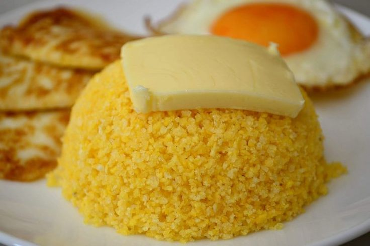

Tapioca
A tapioca é umas das iguarias mais famosas da região norte e nordeste do Brasil. Ela pode
ser
consumida com ou sem manteiga, com coco e também com outros recheios como frango, queijo e
atum. Há algumas opções que são doces, acrescentando chocolate, doce de leite.
Acarajé
O acarajé tem origem africana e é um bolinho frito no azeite de dendê, feito com feijão
fradinho, sal, alho, gengibre, cebola e recheado com camarão. É muito consumido no estado
da Bahia! Se por lá te perguntarem se você prefere “quente ou frio” na verdade é referente
ao nível de pimenta. Quanto mais “quente” mais apimentado será o seu acarajé.
Vatapá
O vatapá é um creme feito com farinha de rosca ou fubá, castanha de caju, pimenta,
leite de coco, amendoim, pão, azeite de dendê e camarão. Ele as vezes é servido com
arroz ou também pode combinar como recheio para o Acarajé.
Moqueca

A moqueca é um cozido de peixe, encontrado especialmente nos estados da Bahia, Pará,
Amazonas e Espírito Santo, com variações regionais significativas
Em geral, a moqueca é um prato preparado em uma panela de barro
e consiste em peixe cozinho (pode ser cação) com outros frutos do mar
como camarão, além de temperos. Entre eles, está o leite de coco e o azeite
de dendê.
Uma boa ideia é combinar com o pirão, que é feito com o caldo do cozimento
do peixe misturado com farinha de mandioca.
Buchada de Bode
No nordeste, a buchada é feito com as entranhas do bode, no caso rins, fígado
e vísceras brancas (tripas). Elas são lavadas, fervidas, cortadas, temperadas
e cozidas em bolsas que geralmente são feitas com o próprio estômago do animal.
Recebe este nome porque supostamente é feita de bode. Ainda assim, é possível
encontrar buchadas preparadas com vísceras de carneiro ou até mesmo boi.
Cuscuz

O cuscuz é um prato de origem africana que é muito consumido no nordeste e
na região norte do país. Ele pode ser feito à base de farinha ou polvilho,
milho, arroz ou mandioca. No nordeste é comumente consumido nas três
principais refeições do dia, podendo ser o prato principal do café da
manhã e jantar. A preferência é ir acompanhado de manteiga, leite, ovos
ou carne de charque.